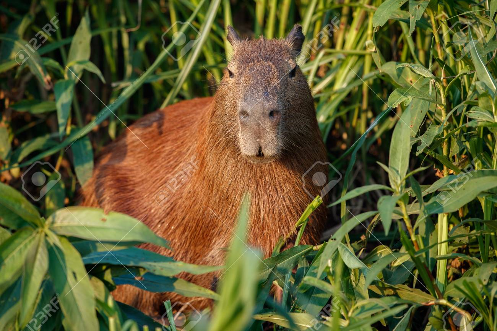
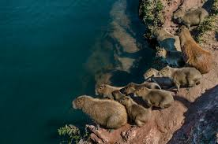

Ciekawostki o kapibarach
📏 Rozmiary
Dorastają do 130 cm długości i 60 cm wysokości w kłębie
💦 Środowisko
Uwielbiają kąpiele wodne i spędzają większość życia w pobliżu zbiorników wodnych
Nasza galeria


Zobacz więcej zdjęć